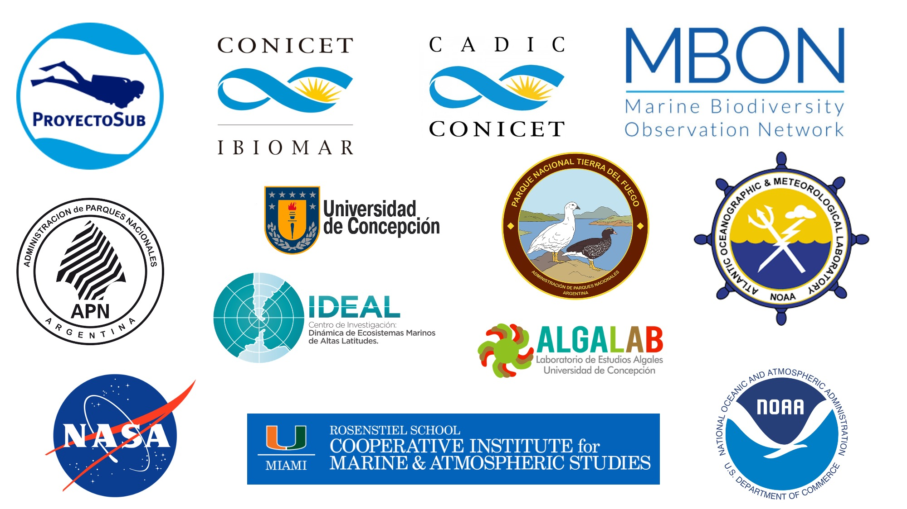
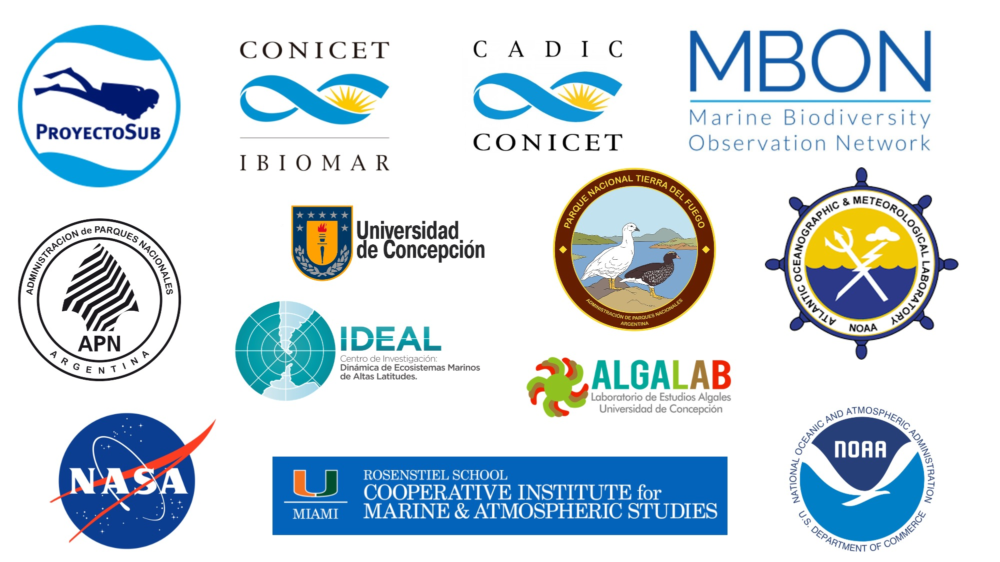

Taller de la Red de Monitoreo de Biodiversidad Marina Polo a Polo de las Américas: implementación de monitoreos de biodiversidad en litoral rocoso con uso de foto-cuadrantes y herramientas de Inteligencia Artificial
Red de
Observación de Biodiversidad Marina Polo a Polo de las Américas (MBON
Pole to Pole)
Fechas: 27-31 de marzo, 2023
Lugar: Camarones, Chubut - Argentina

Este taller busca capacitar Guardafaunas y Guardaparques de Parques
Nacionales y Áreas
Naturales Protegidas de la costa Argentina y personal científico
para el monitoreo de la biodiversidad en litorales rocosos de la
Patagonia usando imágenes (foto-cuadrantes) procesadas con Inteligencia
Artificial para clasificación de especies bentónicas.
Esta
actividad facilitará la creación de una red de trabajo entre
Guardafaunas, Guardaparques y científicos para monitorear los cambios a
largo plazo en los ecosistemas intermareales de fondos rocosos de
Argentina y aportar datos y conocimiento a gestores ambientales de la
Argentina y al programa internacional de monitoreo de biodiversidad MBON Pole to Pole.
Al final del taller los participantes estarán en capacitadad
de implementar herramientas para el monitoreo de condiciones
medioambientales y biodiversidad desarrolladas por el CENPAT y otros
grupos de la región en el marco del proyecto MBON Pole to
Pole.
La recopilación de datos de imágenes basada en colecciones de
foto-cuadrantes se está utilizando ampliamente para estimar la cobertura
y la densidad de algas e invertebrados marinos en costas rocosas y
hábitats sumergidos. El programa MBON Pole to Pole
está impulsando la adopción de herramientas de seguimiento de la
biodiversidad con la toma de foto-cuadrantes a lo largo de las Américas.
El procesamiento y análisis de imágenes se ha realizado normalmente de
forma manual, por lo que la extracción de información taxonómica a
partir de imágenes requiere un sistema automatizado para ser operativo.
Los recientes avances en las herramientas de machine learning y
la transición a la automatización parcial o total de las anotaciones de
las imágenes de foto-cuandrantes surgen como una solución a este
desafío.
En respuesta a esta necesidad, proveerá de entrenamiento técnico para
la toma de imágenes de foto-cuadrantes utilizando métodos estandarizados
y el procesamiento de imágenes utilizando el software CoralNet para la anotación
automatizada de especies y la publicación de registros taxonómicos
basados en imágenes en el Sistema de Información sobre Biodiversidad
Oceánica (OBIS). Este taller tiene como
objetivos: - Acelerar la transición de anotaciones manuales a
automatizadas de foto-cuadrantes; - Entrenar a los participantes en
herramientas de monitorización de la biodiversidad de los hábitats
bentónicos; - Formar a los participantes en el manejo de flujo de datos
para la generación de reportes de biodiversidad

© 2021 
Red de Observación de Biodiversidad Marina Polo a Polo de las Américas (MBON Pole to Pole)
Fechas: 27-31 de marzo, 2023
Lugar: Camarones, Chubut - Argentina
Este taller busca capacitar Guardafaunas y Guardaparques de Parques
Nacionales y Áreas
Naturales Protegidas de la costa Argentina y personal científico
para el monitoreo de la biodiversidad en litorales rocosos de la
Patagonia usando imágenes (foto-cuadrantes) procesadas con Inteligencia
Artificial para clasificación de especies bentónicas.
Esta
actividad facilitará la creación de una red de trabajo entre
Guardafaunas, Guardaparques y científicos para monitorear los cambios a
largo plazo en los ecosistemas intermareales de fondos rocosos de
Argentina y aportar datos y conocimiento a gestores ambientales de la
Argentina y al programa internacional de monitoreo de biodiversidad MBON Pole to Pole.
Al final del taller los participantes estarán en capacitadad
de implementar herramientas para el monitoreo de condiciones
medioambientales y biodiversidad desarrolladas por el CENPAT y otros
grupos de la región en el marco del proyecto MBON Pole to
Pole.
La recopilación de datos de imágenes basada en colecciones de foto-cuadrantes se está utilizando ampliamente para estimar la cobertura y la densidad de algas e invertebrados marinos en costas rocosas y hábitats sumergidos. El programa MBON Pole to Pole está impulsando la adopción de herramientas de seguimiento de la biodiversidad con la toma de foto-cuadrantes a lo largo de las Américas. El procesamiento y análisis de imágenes se ha realizado normalmente de forma manual, por lo que la extracción de información taxonómica a partir de imágenes requiere un sistema automatizado para ser operativo. Los recientes avances en las herramientas de machine learning y la transición a la automatización parcial o total de las anotaciones de las imágenes de foto-cuandrantes surgen como una solución a este desafío.
En respuesta a esta necesidad, proveerá de entrenamiento técnico para la toma de imágenes de foto-cuadrantes utilizando métodos estandarizados y el procesamiento de imágenes utilizando el software CoralNet para la anotación automatizada de especies y la publicación de registros taxonómicos basados en imágenes en el Sistema de Información sobre Biodiversidad Oceánica (OBIS). Este taller tiene como objetivos: - Acelerar la transición de anotaciones manuales a automatizadas de foto-cuadrantes; - Entrenar a los participantes en herramientas de monitorización de la biodiversidad de los hábitats bentónicos; - Formar a los participantes en el manejo de flujo de datos para la generación de reportes de biodiversidad
